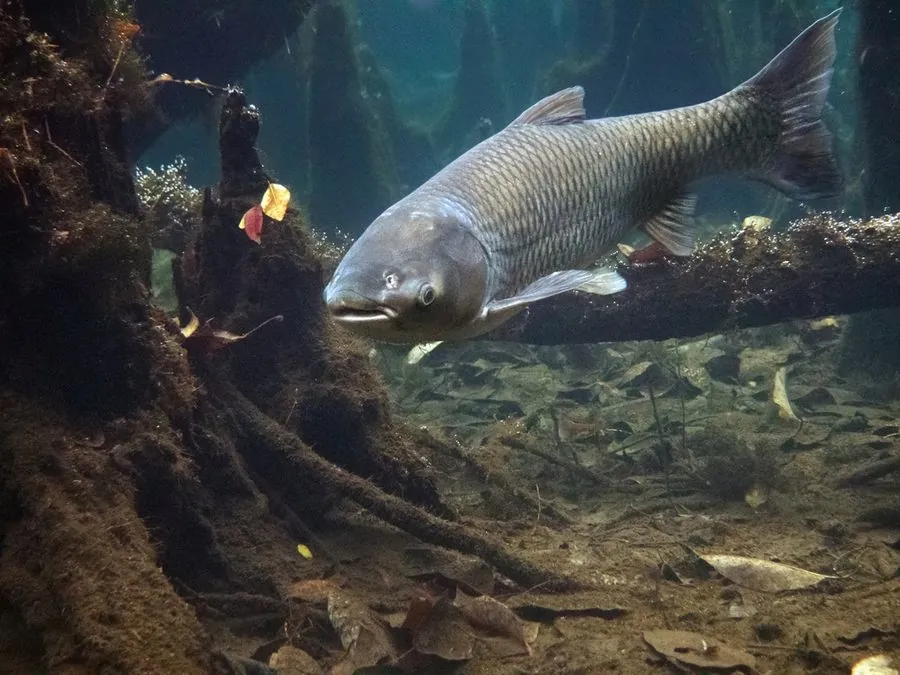

鱼类 · 动物界
草鱼 Ctenopharyngodon idella

中国“四大家鱼”之一，体形圆长、以水草为食，生长快、产量高，是淡水养殖和生态控草的重要鱼类。
- 分类
- 门脊索动物门纲硬骨鱼纲目鲤形目科鲤科属草鱼属
- 栖息环境
- 江河、湖泊和水库的中下层水域，喜水草丰茂、水流平缓的环境
- 地理分布
- 原产中国长江、珠江、黄河、黑龙江等水系，全球多地引种养殖
- 保护级别
- 暂无评估；中国未列入国家重点保护野生动物名录（四大家鱼之一）
物种志
草鱼体呈圆筒形，头稍平扁，吻端钝圆，口端位，无须；体色茶黄带灰绿，腹部灰白，鳞片较大且边缘颜色较深，各鳍呈灰黑色。成鱼体长一般 60–100 cm，体重 3–10 kg，最大个体可超过 30 kg，是四大家鱼中体型较大的一种。
草鱼是典型的草食性鱼类，以苦草、轮叶黑藻、眼子菜等水生高等植物为主食，也吃陆生嫩草、水生昆虫和藻类，食量很大，常在水草丰茂的中下层水域活动。它生长迅速，一般 4–5 龄性成熟，繁殖期在 4–6 月，需要江河涨水的刺激，卵为漂流性，在长江中要上溯到特定江段产卵。草鱼原产中国长江、珠江、黄河、黑龙江等水系，是重要的淡水养殖对象，被引入全球数十个国家后，在北美和欧洲部分水域成为竞争力很强的外来物种。目前草鱼没有IUCN 的正式评估，中国也未将其列入国家重点保护野生动物名录。
形态与习性
- 食性草食性，以苦草、眼子菜等水生高等植物为主，也吃嫩草和昆虫
- 体长一般 60–100 cm，最大可超过 1.2 m
- 体重常见 3–10 kg，最大可超过 30 kg
- 繁殖4–5 龄性成熟，4–6 月产卵，需涨水刺激
- 生长生长迅速，1 龄鱼可达 0.5–1 kg
- 习性常在水草丰茂的中下层活动，性活泼
趣味知识
- 草鱼能把一片水草吃得干干净净，因此被一些国家引进用于清除河道杂草。
- 在北美部分水域，草鱼逃逸后大量繁殖，被视为威胁本地水生植物的入侵物种。
- 草鱼没有胃，食量大，每天摄食的水草可接近自身体重的两成。